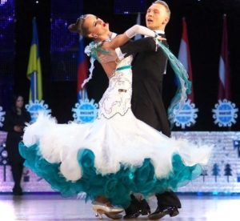

Школа танца
Динамо
Профессиональная школа танца
Танцевать? Легко!
Основные направления:
Латиноамериканские танцы бывают бальными и клубными. Они не сильно отличаются
друг от друга. Бальные латиноамериканские тоже имеют свою классификацию.
Латиноамериканские танцы

- Ча-ча-ча;
- Самба;
- Джайв;
- Румба;
- Пасодобль.
Европейские танцы

- Медленный вальс;
- Венский вальс;
- Танго;
- Фокстрот;
- Квик-степ.
Оригинальная страница